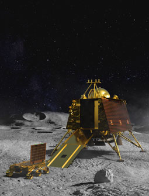

Chandrayaan 2 is an Indian lunar mission that will boldly
go where no country has ever gone before — the Moon's south polar region.
Through this effort, the aim is to improve our understanding of the Moon —
discoveries that will benefit India and humanity as a whole. These insights and
experiences aim at a paradigm shift in how lunar expeditions are approached for years to
come — propelling further voyages into the farthest frontiers.
1st space mission to conduct a soft landing on the Moon's south polar region
1st Indian expedition to attempt a soft landing on the lunar surface with home-grown technology
1st Indian mission to explore the lunar terrain with home-grown technology

4th country ever to soft land on the lunar surface